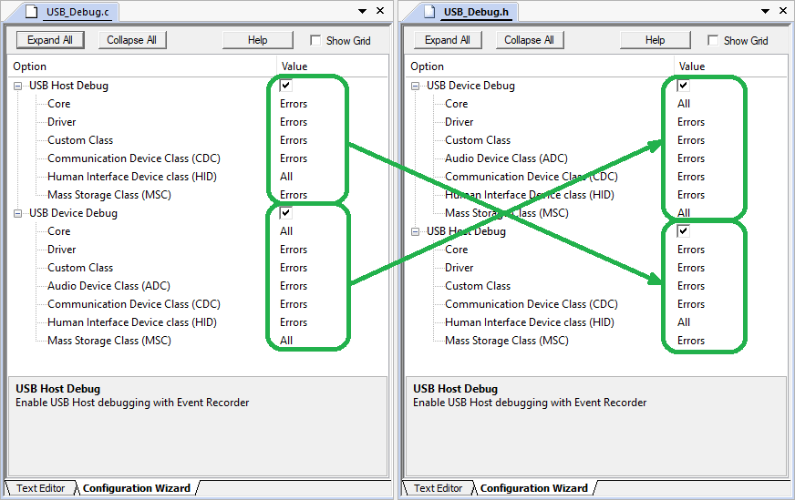
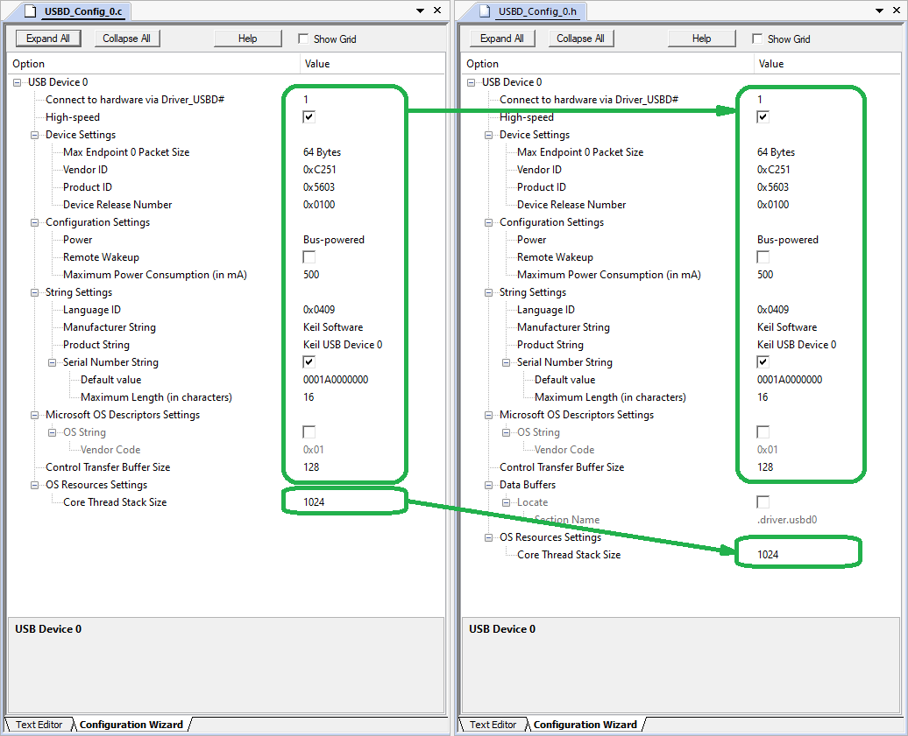
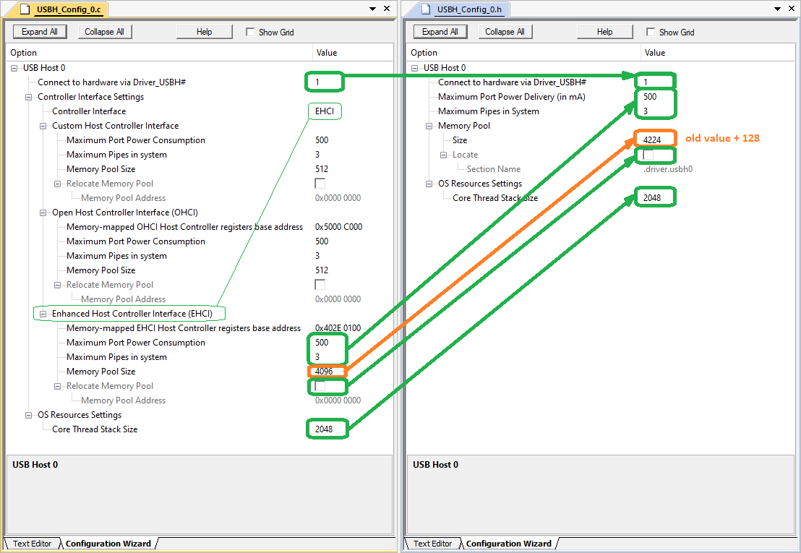

MDK-Middleware v8 introduced the following changes:
- General:
- MDK bundle with source code replaces MDK-Pro and MDK-Plus bundles with pre-built libraries.
- removed CORE component variants.
- added requirement for C compiler version 11 (C11).
- removed support for legacy Arm Compiler 5.
- removed support for CMSIS-RTOS version 1.
- USB debug:
- changed source configuration file to header (USB_Debug.c -> USB_Debug.h).
- USB Device specific:
- changed source configuration files to headers (USBD_Config_0..3.c -> USBD_Config_0..3.h).
- USB Host specific:
- changed source configuration files to headers (USBH_Config_0..3.c -> USBH_Config_0..3.h).
- removed OHCI and EHCI drivers (moved to CMSIS-Driver pack).
The following sections show how to migrate projects from previous version of the MDK-Middleware (v7):
Component migration
To migrate the USB Component make the following changes to component selection:
- Keil::USB: select MDK bundle instead MDK-Pro or MDK-Plus bundle.
- Keil::USB:CORE: deselect Debug or Release variant if one was selected.
- Note
- If the Event Recorder was used for debugging, please select the Event Recorder from the CMSIS-View pack instead the one from the ARM_Compiler pack.
-
USB Component requires C Compiler supporting C11 standard or higher
If any other component is used, like Network or File System, please refer to its Migration Guide.
Configuration migration
Debug:
- if the USB_Debug.c file exists, then compare it with the new USB_Debug.h file and copy old values into the new file:
- if the old file does not exist then debugging was not configured previously
- note that USB Device Debug and USB Host Debug order has swapped in the new configuration file.

Old USB_Debug.c to new USB_Debug.h
USB Device:
- compare the existing USBD_Config_0..3.c files with the new USBD_Config_0..3.h files and copy old values into the new files:

Old USBD_Config_0..3.c to new USBD_Config_0..3.h
USB Host:
- compare the existing USBH_Config_0..3.c files with the new USBH_Config_0..3.h files and copy old values into the new files:
- the USBH_Config_0..3.h does not contain separate settings for Custom, OHCI or EHCI controllers anymore, so to migrate to the new configuration file note which Controller Interface was selected in the old USBH_Config_0..3.c file and copy appropriate controller's previous settings to the new configuration file.
- for Memory Pool Size update the new value by adding 128 since old setting did not include additional necessary space for memory pool internal operation.

Old USBD_Config_0..3.c to new USBD_Config_0..3.h
- Note
- OHCI and EHCI drivers are not a part of the MDK-Middleware anymore but are distributed separately via the CMSIS-Driver pack, so please consult CMSIS-Driver documentation on configuring and using those drivers.